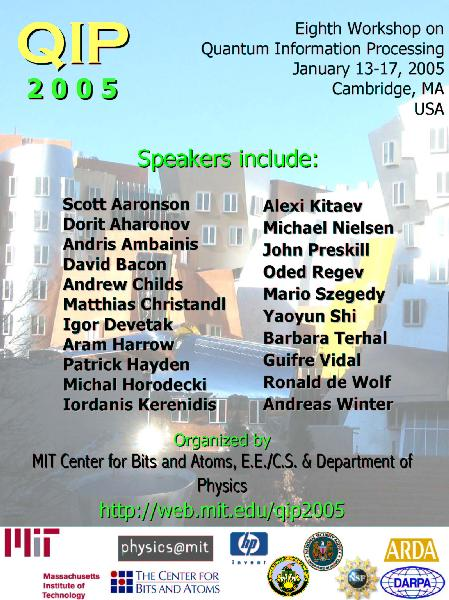

General information
Schedule
Registration
Accomodation
Travel information
Local information

To be held at MIT in Cambridge, Massachusetts (USA); hosted by the quantum information science groups in the Center for Bits and Atoms and the Department of Physics.
January 13 - 17, 2005
Quantum information processing is the recasting of computer science in a quantum mechanical framework. It improves on classical computers and classical complexity bounds by making use of quantum mechanical phenomena. After Peter Shor's 1994 discovery of efficient quantum algorithms for factoring and the discrete log (threatening current "classical" cryptography), the field has grown explosively and is now one of the most active subfields of both computer science and physics. QIP 2005 is the eighth workshop on theoretical aspects of quantum computing, quantum cryptography, and quantum information theory in a series which started in Aarhus in 1998 and was held last year at the Perimeter Institute in Waterloo. The conference will run from Thursday 13 January until Monday 17 January. It will consist of various invited talks, a display of posters, and an open session.
Co-organizers: Isaac Chuang, Edward Farhi, and Peter Shor.
To subscribe to the mailing list for the conference, send an email to qip2005-info-request@mit.edu with subscribe in the subject line, or fill out this web form. We will use this list to send out announcements and updates about the conference. If you have any questions, please contact us at qip2005@media.mit.edu
Sponsored in part by:
Previous QIP workshops:
Perimeter Institute and Institute for Quantum Computing, Waterloo, 2004
MSRI, Berkeley, 2003
IBM, Yorktown Heights, 2002
CWI, Amsterdam, 2001
CRM, Montreal, 2000
Depaul, Chicago, 1999
BRICS, Aarhus, 1998
